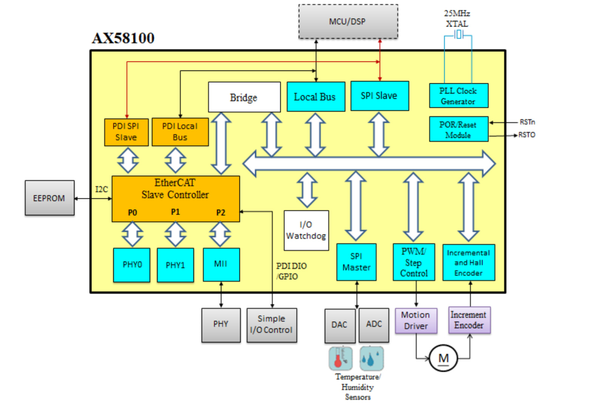

造车日记 - 驱动板规划
总线之首选 -> EtherCAT
久闻 EtherCAT大名，想着就以帅的名义学习一番，看看能不能用作小车的内部主干总线。
经过几个晚上的学习，大概摸清了Ethercat的毛皮。
EtherCAT， 是一个以以太网为基础的工作现场总线。它完全沿用了以太网的物理层，并延续了标准的以太帧，但后面的使用上则完全不同。
常规以太网
在常规的以太网中，并没有中心节点，每个节点都可以占用网络，并相应发展出载波监听/冲突检测技术，当多个节点同时想收发信息时，必定会有不确定的延时。
此外虽然以太网的基础速率较高，但是对于高频次的短小消息来说，整体总线利用率可以说非常低（2-5%）
原理
在一个EtherCAT网络有且只有唯一的主站，从站节点则可以多达六万多个。而网络利用率却可以达到~97%，同时，从站间的同步偏差小于1us，在包含100个伺服轴节点的系统中，可以以10kHz的速度更新它们的状态信息。
这对于一个有众多执行机构，并且需要可控同步的机器人系统来说太美好了。
基本上主站的网络设备可以使用常规的以太网卡。EtherCAT改造的是从站节点的“网卡”。
在EtherCAT中每个从节点都有一个特制的网卡，该卡有2个独立的port（也有的有3个）。其中一个连接上行设备（或者主站），另外一个连接下行设备（或者留空）。
EtherCAT子设备网卡，支持一种被称为“Processing On the Fly”的技术，当一个从站收到上游发来的数据时，立即在硬件上将属于自己的数据更新，并立刻从下游端口发出新的数据。
维基百科上的一个动图很好的解释了这一点。
网卡
从站的EtherCAT网络方案有大概三种
- SOC， ARM核心带ethercat控制器
- FPGA Core
- 收发器
使用SoC的芯片应该是更合理的方式，不过当前支持EtherCAT的SoC并不算多，所以我重点看了两款独立的收发器芯片，这样搭配自己的处理器会灵活一些。
- LAN9252
- AX58100
基本大同小异吧， 以AX58100为例， 内部框图如下

典型系统构成
感觉开发从站的话应该只是工作量的问题，并没有明显障碍。
问题
目前为止，一起都很美好，除了EtherCAT的性能对于一个玩具小车来说有些overkill。
直到我大略的看了一下主站方案……问题出来了。
似乎主流的Linux主站方案都停留在2013年左右，对LinuX内核支持停留在 2.6/3.x的时代，而我电脑目前的内核版本是5.5.9……
更为头疼的是因为EtherCAT的实时性非常高，似乎如果主站不是实时操作系统的话，从节点会因为得不到及时相应而罢工……
看了一圈，似乎目前的方案是引入这个项目
这是一个让计算机运行双内核的东西。标准LinuX内核+实时内核。
这玩笑就开大了……完全搞定这个，似乎研究生都能毕业一回。而我要的只是一个能控制小车的总线……
最终选择
EtherCAT性能确实优异，看上去也很好玩，再合适的场景下确实相当帅。
我会继续看下去，但是恐怕不是在小车这个东西上了。
所以最终，小车的主控（暂定RK3399）和电机板之间的总线为
USB
驱动板MCU
这里先透露一下 FoC计划 的首款PCB
小车的话，打算采用同款MCU STM32F303RET6
有四个QD，在CubeMX里试了一下，有足够的资源硬件解码。
USB也靠它片上实现
此外8根PWM，驱动电机
说不定灯效也放在它身上，到时候看
电机驱动器
作为MPS脑残粉，电源、驱动之类的肯定首选MPS。
本来看中 MP6519
这是一颗28v 5A的可控恒流源。本来想着可以对付因为感抗造成的DC启动性能差的问题，不过后经高人提醒，电机的调速用电流源的话，会非常不线性。
最后基本确定为 MP6612 这颗。
不日将开工画板。
to be continued..